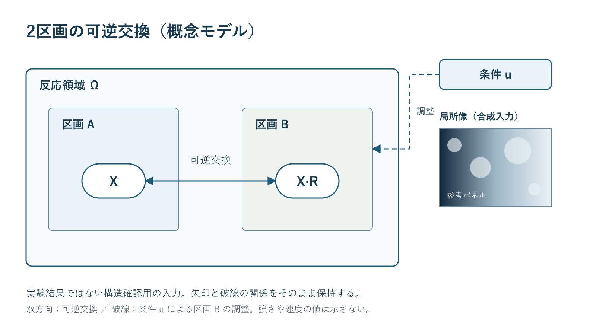
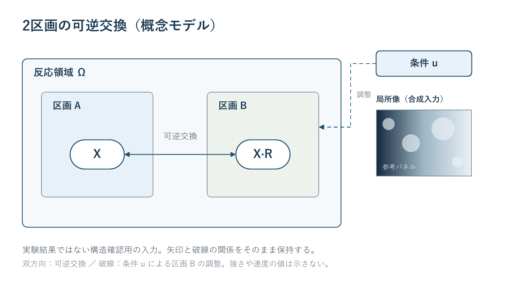
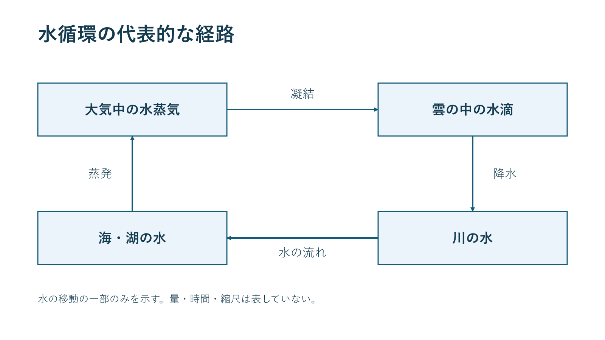
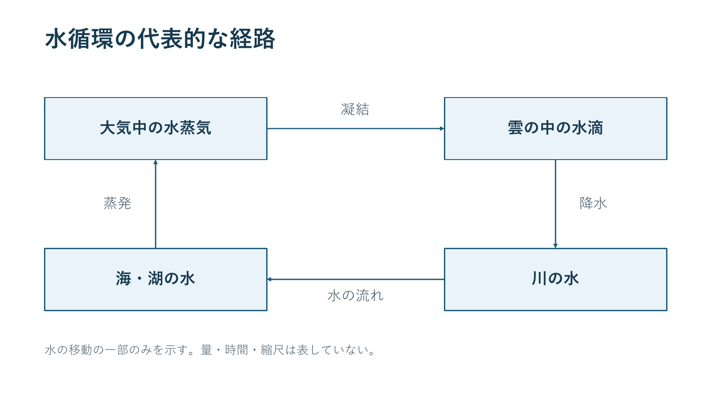
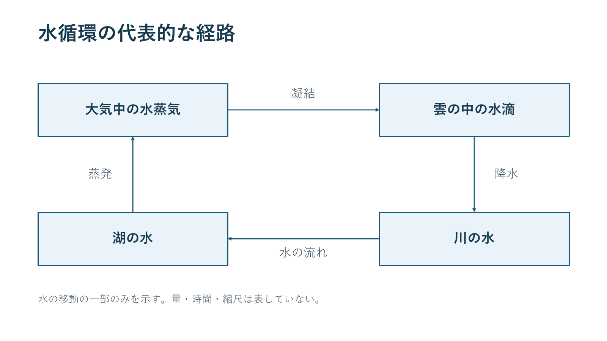
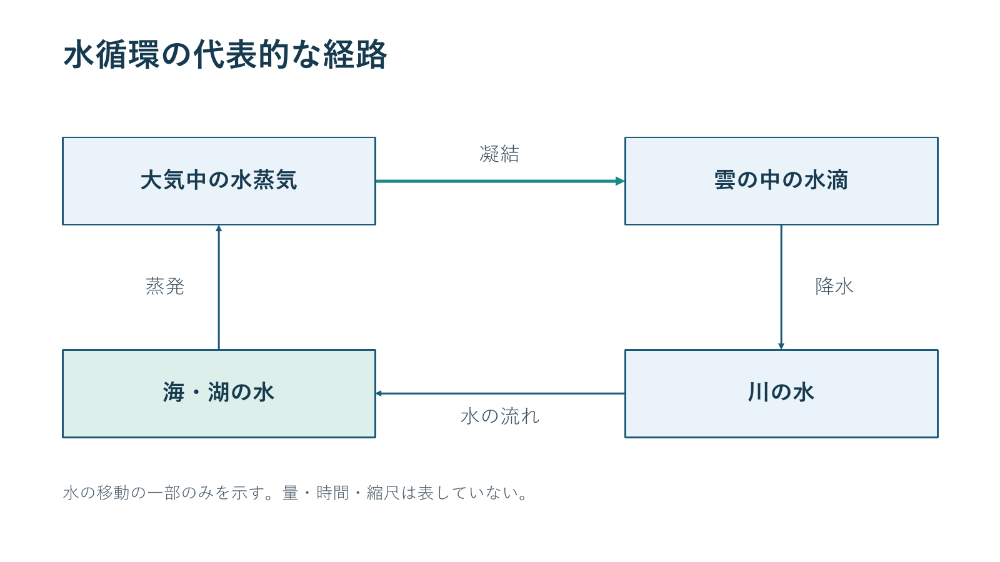

スキル一覧へ戻るsci-diagram-pptx / HututuWorks
科学図の画像を、編集可能なPPTXにする
元の編集ファイルがなくても、図の文字や矢印をPowerPointで修正したいときに使います。元の文言と関係を読み取り、文字・図形・線を個別に編集できる1枚へ復元します。
入力は模式図PNG。出力は同じ図のnative PPTX。
主な効果は複合例の入れ子・双方向・破線・画像小図の所有分離で確認できます。下の4箱の単純例は最小方向保持と編集の補足です。初稿は実Opus5.5、現在の保存プログラムの整理と実行・検査はCodexが担当しました。
入れ子・双方向・破線も、編集できる関係として残す
複合例では外側の領域と2区画を別の図形にし、可逆交換の両端矢じり、条件uから区画Bへ向かう破線の折れ線を保持しました。右の合成画像小図だけを画像のまま残し、周囲の見出しや線と分担しています。
複合例の入力PNG

実験結果ではない構造確認用の入力。小図内の「参考パネル」は画像の一部です。
編集できるPPTXの表示

23個のnative図形（うち文字12個）と画像小図1個。小図の内部はrasterのまま、周囲の見出しは編集できます。pass-04で角丸値とnative矢じりを補正。字体や線の描画には近似が残ります。
複合例の編集できるPPTX · PDF · 入力PNG · 実行コード · 使い方と制約 · native/raster対応表
XだけをX*へ変更した別PPTXと保存後の表示を確認できます。初稿は実Opus5.5が原典とPNGを読んで作成し、Codexがpass-02で書体だけをYu Gothicへ修正。その後の明示された追加改善によるpass-04で角丸・矢じりサイズを補正し、実行・検査しました。現在のbuildは矢じり補正まで自己完結し、別のPython補正は不要です。
PowerPoint16とLibreOfficeで制作担当が表示確認。原典checkerには文字枠wrap=noneの警告1件が残ります。数式・実験写真・Repair/Inspection・箱移動への自動追従は未実証です。
入力 PNG
図全体が1枚の画像
この入力はStudio Yebisuが作例用に先に作成しました。USGS画像の複写や、スキルなしAIの出力ではありません。
出力 PPTXの描画
同じ文言と矢印を個別のオブジェクトに復元
PPTXを開くと、「海・湖の水」だけを選んで文字を直せます。元PNGはPPTX内に貼り付けていません。
文字だけを変更して保存する
図全体を画像として貼り直さず、「海・湖の水」の文字だけを「湖の水」へ変更。別のPPTXとして保存し、PowerPointで開き直して確認しました。

変更したPPTX · 保存・再表示の確認記録
箱と矢印を別々に変更して保存する
別コピーで左下の箱の塗りと、上の凝結の矢印の色・太さだけを変更し、PowerPointで保存・再表示した。原文・向きと採用版は変更していない。線は箱へ自動追従する接続図形ではない。

変更した別PPTX · 4本の線と方向のXML検査
この作例で確認する効果
- 画像内の元の日本語を、編集できる文字として保持する。
- 4本の矢印の出発点・到着点・方向を保持する。
- 図の意味を変えずに、PowerPointで修正できる状態にする。
見た目の美化や作業時間の短縮を比較した例ではありません。単純例は4箱・直線4本の限定例です。追加の複合例で入れ子・双方向・破線・合成画像insetを確認し、数式・実験写真・線同士の交差・自動接続は未実証のままです。
入力要素とnativeオブジェクトの対応表 ・ 使い方と制約 ・ 原典と制作範囲 ・ 実施した確認 ・ 原典SKILL
図は水循環の一部を示す模式図です。量・時間・縮尺は示しません。科学説明の参照: USGS 凝結、USGS 水の経路。